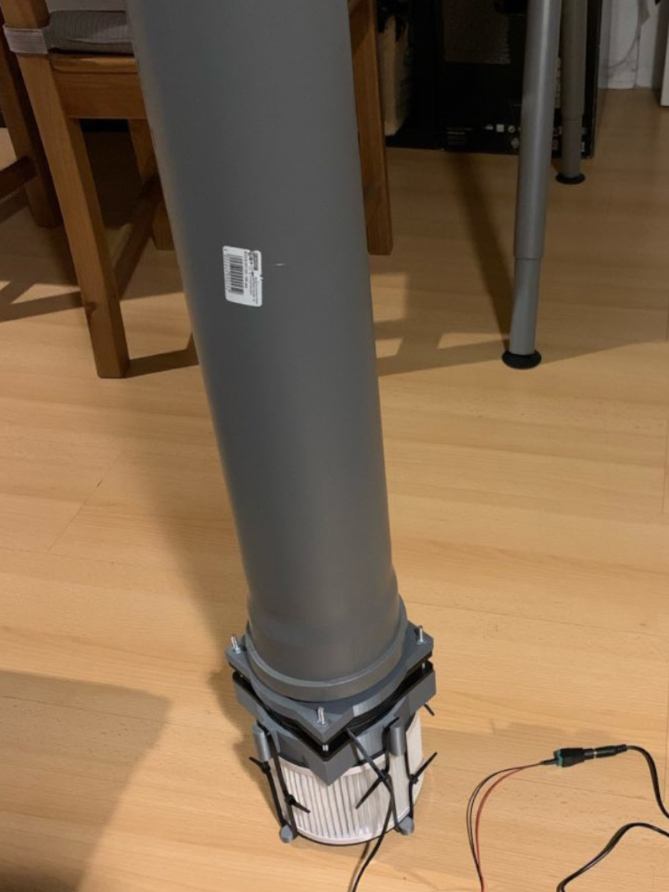

Air Filter
Home
Privacy Policy
Imprint
This air filter systems are intended to filter aerosols from the air, to which the corona viruses can be attached. More Informations on
GitHub
 Join us for the workshop at RC3. It will take place on day 2 on the
hacc/a:f
stage at 20:00.